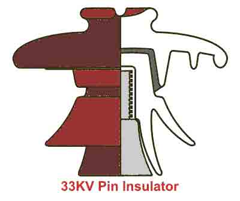
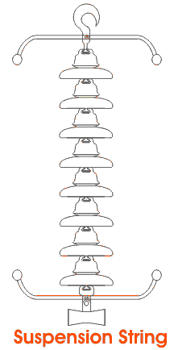
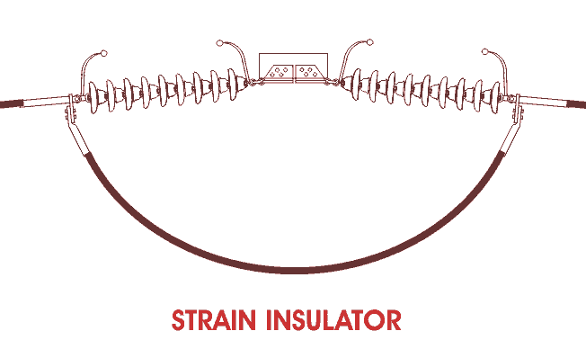
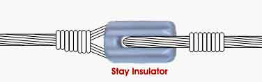
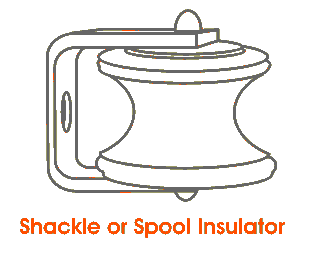

There are mainly three types of insulator used as overhead insulator likewise
1. Pin Insulator
2. Suspension Insulator
3. Strain Insulator
In addition to that there are other two types of electrical insulator available mainly for low voltage application, e.i. Stay Insulator and Shackle Insulator.
Pin Insulator
Pin Insulator is earliest developed overhead insulator, but still popularly used in power network up to 33KV system. Pin type insulator can be one part, two parts or three parts type, depending upon application voltage. In 11KV system we generally use one part type insulator where whole pin insulator is one piece of properly shaped porcelain or glass. As the leakage path of insulator is through its surface, it is desirable to increase the vertical length of the insulator surface area for lengthening leakage path. In order to obtain lengthy leakage path, one, tow or more rain sheds or petticoats are provided on the insulator body. In addition to that rain shed or petticoats on an insulator serve another purpose. These rain sheds or petticoats are so designed, that during raining the outer surface of the rain shed becomes wet but the inner surface remains dry and non-conductive. So there will be discontinuations of conducting path through the wet pin insulator surface.
In higher
voltage like 33KV and 66KV manufacturing of one part porcelain pin insulator becomes difficult. Because in higher voltage, the thickness of the insulator become more and a quite thick single piece porcelain insulator can not manufactured practically. In this case we use multiple part pin insulator, where a number of properly designed porcelain shells are fixed together by Portland cement to form one complete insulator unit. For 33KV tow parts and for 66KV three parts pin insulator are generally used.

Designing Consideration of Electrical Insulator
The live conductor attached to the top of the pin insulator is at a potential and bottom of the insulator fixed to supporting structure of earth potential. The insulator has to withstand the potential stresses between conductor and earth. The shortest distance between conductor and earth, surrounding the insulator body, along which electrical discharge may take place through air, is known as flash over distance.
1. When insulator is wet, its outer surface becomes almost conducting. Hence the flash over distance of insulator is decreased. The design of an electrical insulator should be such that the decrease of flash over distance is minimum when the insulator is wet. That is why the upper most petticoat of a pin insulator has umbrella type designed so that it can protect, the rest lower part of the insulator from rain. The upper surface of top most petticoat is inclined as less as possible to maintain maximum flash over
voltage during raining.
2. To keep the inner side of the insulator dry, the rain sheds are made in order that these rain sheds should not disturb the
voltage distribution they are so designed that their subsurface at right angle to the electromagnetic lines of force.
Post Insulator

Post insulator is more or less similar to Pin insulator but former is suitable for higher
voltage application.
Post insulator has higher numbers of petticoats and has greater height. This type of insulator can be mounted on supporting structure horizontally as well as vertically. The insulator is made of one piece of porcelain but has fixing clamp arrangement are in both top and bottom end.
The main differences between pin insulator and post insulator are,
| SL |
Pin Insulator |
Post Insulator |
| 1 |
It is generally used up to 33KV system |
It is suitable for lower voltage and also for higher voltage |
| 2 |
It is single stag |
It can be single stag as well as multiple stags |
| 3 |
Conductor is fixed on the top of the insulator by binding |
Conductor is fixed on the top of the insulator with help of connector clamp |
| 4 |
Two insulators cannot be fixed together for higher voltage application |
Two or more insulators can be fixed together one above other for higher voltage application |
| 4 |
Metallic fixing arrangement provided only on bottom end of the insulator |
Metallic fixing arrangement provided on both top and bottom ends of the insulator |
Suspension Insulator

In higher voltage, beyond 33KV, it becomes uneconomical to use pin insulator because size, weight of the insulator become more. Handling and replacing bigger size single unit insulator are quite difficult task. For overcoming these difficulties, suspension insulator was developed.
In suspension insulator numbers of insulators are connected in series to form a string and the line conductor is carried by the bottom most insulator. Each insulator of a suspension string is called disc insulator because of their disc like shape.
Advantages of Suspension Insulator
1. Each suspension disc is designed for normal
voltage rating 11KV(Higher
voltage rating 15KV), so by using different numbers of discs, a suspension string can be made suitable for any
voltage level.
2. If any one of the disc insulators in a suspension string is damaged, it can be replaced much easily.
3. Mechanical stresses on the suspension insulator is less since the line hanged on a flexible suspension string.

4. As the
electric current carrying conductors are suspended from supporting structure by suspension string, the height of the conductor position is always less than the total height of the supporting structure. Therefore, the conductors may be safe from lightening.
Disadvantages of Suspension Insulator
1. Suspension insulator string costlier than pin and post type insulator.
2. Suspension string requires more height of supporting structure than that for pin or post insulator to maintain same ground clearance of
electric current conductor.
3. The amplitude of free swing of conductors is larger in suspension insulator system, hence, more spacing between conductors should be provided.
Strain Insulator
When suspension string is used to sustain extraordinary tensile load of conductor it is referred as string insulator. When there is a dead end or there is a sharp corner in transmission line, the line has to sustain a great tensile load of conductor or strain. A strain insulator must have considerable mechanical strength as well as the necessary electrical insulating properties.

| Rated System Voltage |
Number of disc insulator used in strain type tension insulator string |
Number of disc insulator used in suspension insulator string |
| 33KV |
3 |
3 |
| 66KV |
5 |
4 |
| 132KV |
9 |
8 |
| 220KV |
15 |
14 |
Stay Insulator

For low
voltage lines, the stays are to be insulated from ground at a height. The insulator used in the stay wire is called as the
stay insulator and is usually of porcelain and is so designed that in case of breakage of the insulator the guy-wire will not fall to the ground.

Shackle Insulator or Spool Insulator
The
shackle insulator or
spool insulator is usually used in low
voltage distribution network. It can be used both in horizontal and vertical position. The use of such insulator has decreased recently after increasing the using of underground cable for distribution purpose. The tapered hole of the
spool insulator distributes the load more evenly and minimizes the possibility of breakage when heavily loaded. The conductor in the groove of
shackle insulator is fixed with the help of soft binding wire.
 by
by